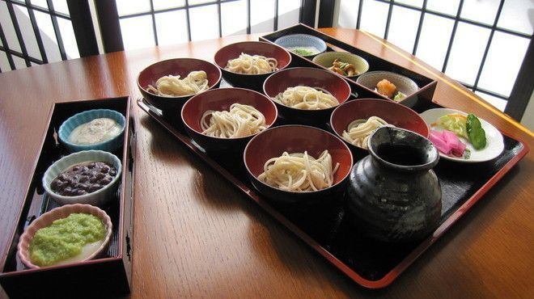
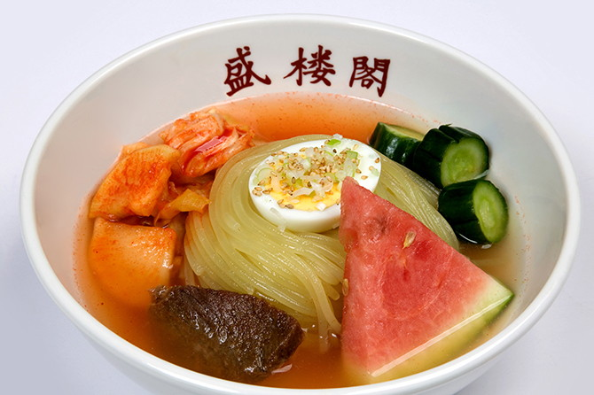

【 わんこそば 】
茹でたてのそばをおいしく、たくさん食べていただこうというおもて
なしの心から生まれた伝統の名物料理です。
お椀が空になると次々とそばが入れられ、食べた分だけ積み重なって
いくお椀の山。様々な薬味をアクセントにしつつ、おなかがいっぱい
になること間違いなしです！
|

【 盛岡冷麵 】
朝鮮半島の伝統料理・冷麺がアレンジされたものであります。
生地に小麦粉と澱粉を使うことで麺に越があるのが特徴です。
キャベツと大根のキムチは辛みとさわやかな酸味でコクを強く、冷麵
全体の辛さを調整できます。
麺・スープ・キムチが三位一体となったおいしさにやみつきになること
間違いなしです！
|